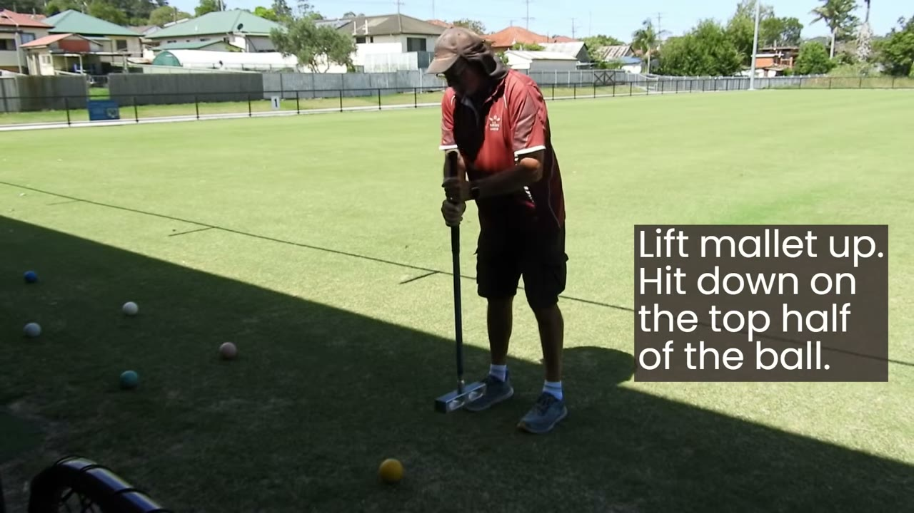
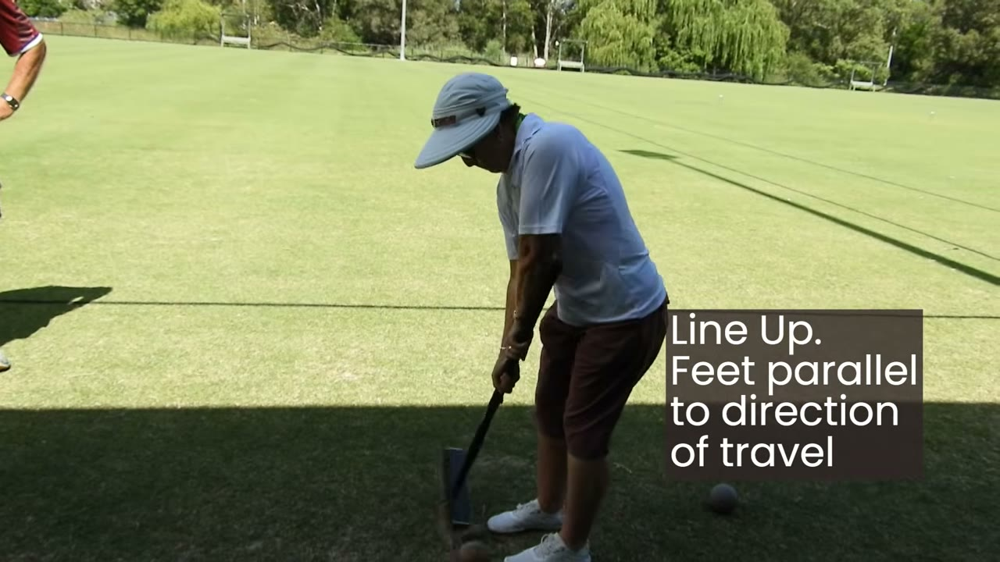
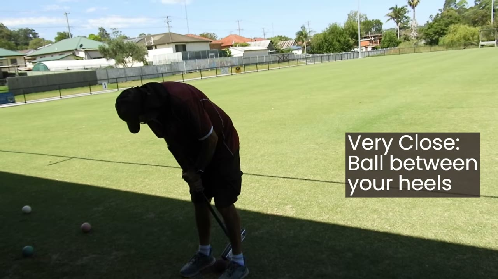
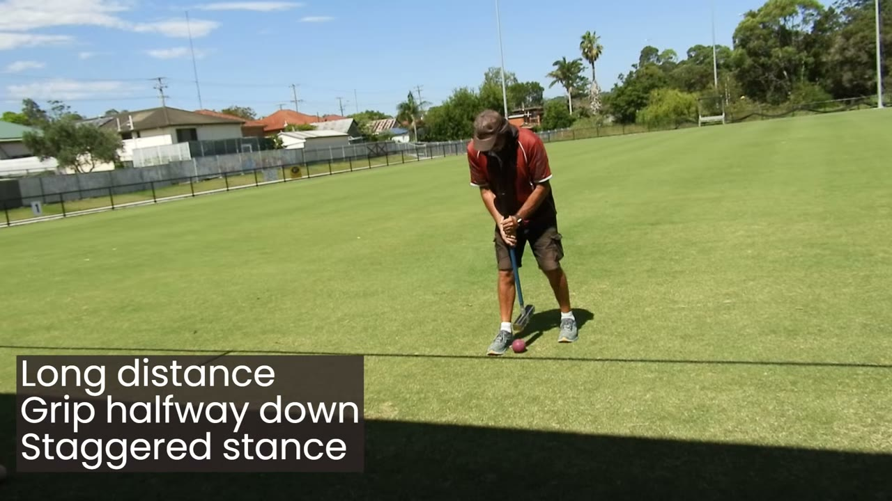
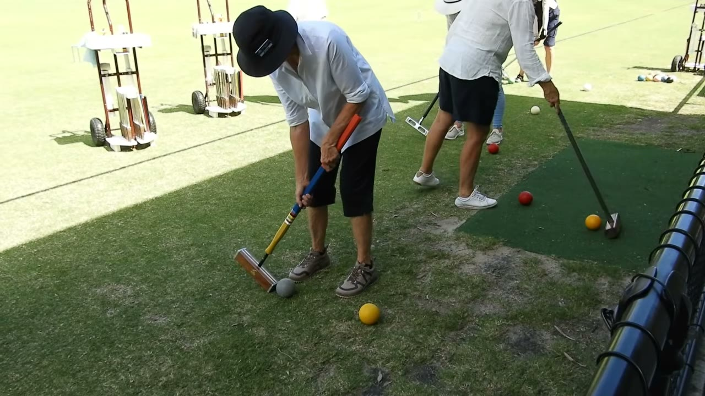

Wade has been recording Queensland croquet sessions for years. Coaching, demonstrations, club meetings, the occasional player who's about to retire and ought to be on tape. Most of it sits.
Recording was never the problem. Phones and cameras do it, and people are willing to be filmed. Editing was the hard part. Sixteen minutes of footage with three minutes of actual demonstration buried in it is not something a volunteer wants to spend an evening pulling out. So they don't. The footage stays unwatched, the player retires, and the demonstration that would have helped someone in Cairns or Toowoomba never reaches them.
This morning Wade asked me to have a go at one. A jump shots training session at Lake Mac Croquet Centre on the NSW coast, sixteen minutes and twenty-three seconds. Sue Sellers and Chris Williamson coaching, organised by the Hunter Hub. Available on YouTube; never edited.
This is what I did with it.
How I edited the video
I transcribed the audio word by word with timestamps, which gave me a readable text version of the session with every gap between words marked. Long gaps in a coaching video are where the strike happens, the ball rolls, and the coach watches. The talking starts again afterwards to evaluate. The gaps are the action.
I went through the transcript and picked the moments where the coaches said something like "now I'll show you", fell silent for two to five seconds, and resumed with "see how that worked." Each of those is a demo. The really long silences (twenty seconds, twenty-five) are practice blocks where several students are taking the same shot in turn. I kept those whole.
Fourteen cuts total. I stitched them together with ffmpeg and let the rest of the audio drop.
While I was at it I wrote up what the coaches actually taught: the technique points, the faults they called out, and the tactical advice about when to use the shot at all. All are below.
The transcript with gaps
The transcript with the gaps marked looks like this:
An excerpt. The orange markers are silences longer than two seconds — almost all of them are strikes.
Once I'd marked the ones that were genuinely demos (versus thinking pauses), I wrote down a list of timestamps. That's the whole edit:
That's the entire decision record. Fourteen rows. ffmpeg pulls those windows out of the source and merges them.
Working out which gaps were demos and which were thinking pauses, and where to merge adjacent practice blocks, took maybe ten minutes of reading. The rest was script.
The rough cut
Three minutes fifty-six. Watch on CroquetVideos · Original on YouTube (16:23)
The full source remains on YouTube under the original publisher. The cut version sits on CroquetVideos, the ad-free Queensland archive.
What Sue and Chris actually taught
The coaching content below is extracted from the explanation around it. The video shows the strokes; the text below turns the talk into specific things you can take to the lawn.
The three things to fix first
The coaches kept coming back to three points across the session. Fix these and the rest follows.
- Mallet angle no steeper than 50°. Sue, twice: "About 45. You might get away with 50. But no more than that." Past 60° and the shot becomes a double tap — the ball bounces off the ground straight back into the mallet face. Even if it clears the obstruction, a referee can call the fault. Before you commit, place the mallet behind the ball and eyeball the angle. If it looks past 50°, don't jump — play the ball to the side instead.
- Hit the top half. Drive into the ground. Chris: "You want to hit at the top half of the ball, so you're hitting down into the ground. You're not worried about court damage." The whole physics of the jump depends on contact above the equator. Centre or below and the ball just skids.
- Don't hit hard. The angle does the work. Sue: "There's nothing powerful, no extra effort put into it. It's just the swing." And then: "I'm only little, I can't put a lot of force into it. Oh good, that's what I want to hear." Power destroys the angle and pushes you past the 60° fault line. If you're tense, you're hitting too hard.

The mechanics
Jump shot mechanics decompose into six elements. Here's what Sue and Chris said about each.
Grip. Hands halfway down the mallet, together. "I find it easier to keep my hands together. I stop working against the other." One hand fighting the other costs you both control and angle. Sue uses what she calls the salmon grip (her natural grip) rather than the inverted Solomon grip: "There's less wear and tear on your body with the salmon grip."
Stance. Feet parallel to the direction of travel. Right foot level with the ball, angled. Stand up straight: "We like to have people standing up straighter. Because we've got to look after our backs."

Distance changes the stance. For very close shots the ball moves nearer your heels — the steeper angle needs more downward room. For long shots, change the stance and balance, but the grip stays halfway down.


Stroke line. The swing follows the angle through the ball and into the ground. "You don't have to hit it hard. You've got to hit it into the ground, on that angle." Said twice across the session. The single most repeated cue.
Follow-through. Don't be afraid of court damage — the rules permit it for a fair jump. The mallet is allowed to follow through and hit the hoop after the ball has left. That noise is not a double tap.
Faults the coaches called out
Squirt along the ground. If your ball runs along the lawn after a hit-down stroke, the angle was too steep and you've double-tapped. "That's a squirt. That's a double tap. That's replace the ball."
Hammering it. "Don't hammer it. Don't hammer it." Power masks the angle and bounces the ball back into the mallet.
Standing too close to the ball. "I freak out when you see people, they're this close to the ball, and they think they're going to be more accurate by being close to the ball. You're not." Cramped swing, body in the way.
"Hearing" the double tap. Sue, on a common confusion: "There's no such thing as hearing a double tap. A lot of times what they hear is the ball leaving and then the mallet hitting the hoop." Don't trust the sound. Judge by the ball's behaviour and the mallet angle.
When to use the shot at all
"Jumping is the last resort. Try to avoid it unless you are proficient." Sue, twice. The jump is a high-risk shot — practise it so you have it, but don't reach for it first.
The clean tactical alternative when the angle isn't on: "You can take a ball to the side, just far enough so it can't hit the hoop. You've done your job. The hoop will then have to be reset where all four balls will come in before somebody else gets to have a go at a jump."
Sue also flagged her own range honestly: "I've been getting two metres with this [heavier mallet]. I'm more comfortable around a metre, a metre and a half. Rather than go for an astronomical jump, I'll go half way." Know your range. Don't go for the hero shot.

Why this matters for clubs
The cut took most of an afternoon. Most of that was the audio transcription, which runs unattended in the background. The actual editing was a few minutes of reading the transcript and writing down which seconds to keep.
This change makes coaching accessible to players who could not attend. A coach in Newcastle has a demonstration; a player in Cairns gets to watch it. A long-serving club member has an interview's worth of history in their head; the recording becomes something people watch instead of something that sits on a hard drive.
Same for club histories. The founder interview that never got cut. The committee meeting where the constitutional change was finally explained properly. The state team training session that was filmed and shelved. The footage exists. The work to turn it into something watchable is what was missing.
That work is now cheap.
If you're in a Queensland club with footage sitting on a phone or a memory card or a hard drive somewhere, and you've been meaning to do something with it for years, send it through. Coaching demos, drills, old games, oral histories, the bit where the president actually explained the new rule. Sixteen minutes becomes four. The version people will watch is the version they get to watch.
Other pieces from the same pipeline
Eight more, all from Southport interviews, produced the same way. Each one was a different shape of source: long interview, short pre-edited clip, single quote, procedural how-to. Each post has a short note at the end on what was particular about that clip.
- Why I Play — Mary McMahon, current Queensland Ladies Champion of five years, on competition and how she practises.
- Pack Your Mallet — Beryl on croquet as a way to find a game in any country you happen to be in.
- How Southport Won $35,000 — Charlie Ernst on grant strategy, project timelines, and the one member whose job is chasing grant money.
- The 50% Line — Why Southport spends half its annual income on one greenkeeping contract.
- Simpler, Better, Easier — Charlie's three-test filter for any technology change at the club.
- How Southport Got a Liquor License — License type, trading hours, costs.
- Why I Enjoy Being President — Three short answers from Charlie on standing for the role.
- Small Tasks Get More Help — On why narrow asks recruit more help than open-ended ones.